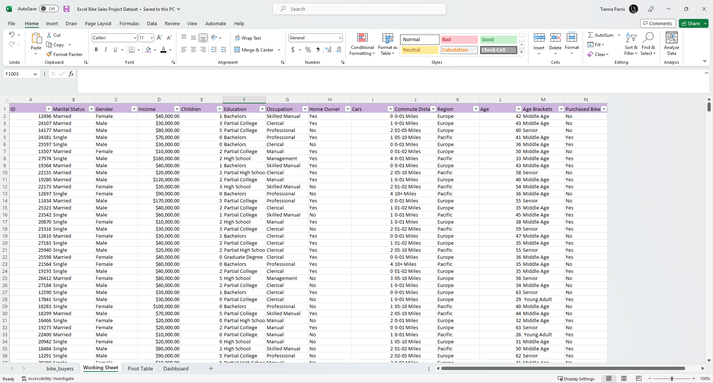
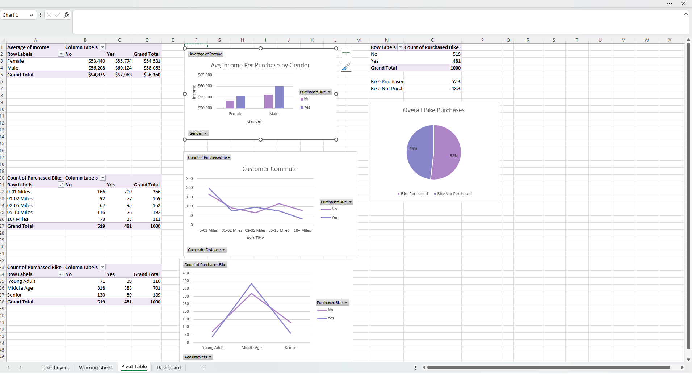
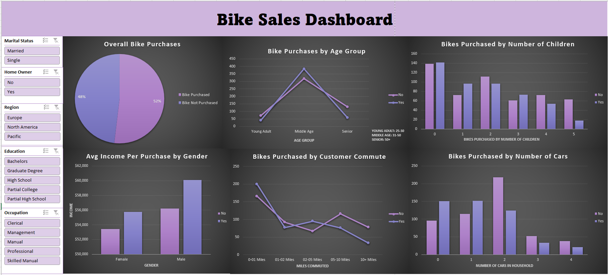

Project Details
Goal
Our goal is to identify the ideal customer for a bike shop. To accomplish this, we will analyze customer data from an Excel sheet containing information on Marital Status, Gender, Income, Children, Education, Occupation, Home Owner, Cars, Commute Distance, Region, Age, and Purchased Bike.
Download from GitHub!Setup
To start the project, data cleaning was performed to ensure accurate analysis. This included the removal of duplicate entries to avoid potential biases in the dataset. Furthermore, the data was updated to be more interpretable, such as replacing "m" and "f" with "male" and "female", and "m" and "s" with "married" and "single". Age groups were also created to facilitate better visualization of the data. Additionally, I ensured there was no missing data and that each field had the correct data type.
Fig 1. This image shows the dataset after it was cleaned.
These steps were essential to ensure that the data was properly formatted for analysis and would yield accurate results. We initally started with 1026 records and now we have 1000.
Analysis
Now that we have clean data, we can perform exploratory data analysis to gain insights and patterns in the data.
Business Questions:
- What is the most common age group of customers who purchase bikes from the shop?
- What is the most common gender of customers who purchase bikes from the shop?
- What is the most common income range of customers who purchase bikes from the shop?
- What is the most common education level of customers who purchase bikes from the shop?
- What is the most common occupation of customers who purchase bikes from the shop?
- What is the most common region of customers who purchase bikes from the shop?
- What is the most common commute distance of customers who purchase bikes from the shop?
- What is the most common number of cars owned by customers who purchase bikes from the shop?
- Does the marital status of customers have any correlation with the likelihood of purchasing a bike from the shop?
- Does being a home owner have any correlation with the likelihood of purchasing a bike from the shop?
By answering these questions, the bike shop can develop a better understanding of their ideal customer and tailor their marketing strategies to attract more of these customers.
Data Exploration
We will start by segmenting the customers based on their age, gender, income, marital status, etc.
I used the customer data to create pivot tables that grouped the customers based on different criteria. Using these groups, I created charts that show key insights. Additionally, differnt functions were used to perform calculations.
Fig 2. This image shows the different pivot tables and charts.
To make it easy to view all this information at once, I created a dashboard that displays all the charts. I also added a slicer to the dashboard, which allows users to filter the data based on different criteria. This makes it easy to identify the customer segments that are most likely to purchase a bike.
Fig 3. This image shows the Bike Sales Dashboard.
Key Findings
Using the dashboard, we were able to determine the following insights:
- Age group: The largest group of bike purchasers falls within the middle age range of 31-50.
- Education level: The majority of customers who purchase bikes have completed partial high school education.
- Occupation: The most prevalent occupation among bike purchasers is in management.
- Region: North America is the region where most bike purchases are made.
- Commute distance: Most bike purchasers have a commute distance of 0-1 mile.
- Number of cars owned: The majority of bike purchasers own 0-1 cars.
- Number of children: Most bike purchasers do not have children.
- Marital status: Married customers are more likely to purchase a bike, possibly due to their combined income being greater than that of a single income household.
- Home ownership: There is no significant correlation between being a homeowner and the likelihood of purchasing a bike.
Recommendations
Based on these findings, the business can implement the following actionable steps to improve sales:
- Target marketing efforts towards the middle age range of 31-50, which is the largest group of bike purchasers. This can be done through targeted advertisements, promotions, and events.
- Cater to the needs and interests of customers in management positions, who are the most prevalent occupation among bike purchasers. This can be done by offering high-end, performance-focused bikes and accessories.
- Focus sales efforts on North America, which is the region where most bike purchases are made. This can involve increasing inventory and offering promotions specific to this region.
- Cater to married customers by offering high-end, performance-focused bikes and accessories. Additionally, consider offering promotions for couples who purchase bikes together.
- Offer affordable bike options for customers who own 2+ cars. The minority of bike purchasers own 2+ cars, this may due to the fact that they are financing the vehicles they own. This can involve offering financing or payment plans for high-end bikes.
In conclusion, these findings provide valuable insights into the demographics and preferences of bike purchasers. By implementing these actionable steps, the business can improve sales and better cater to the needs and interests of its target market.